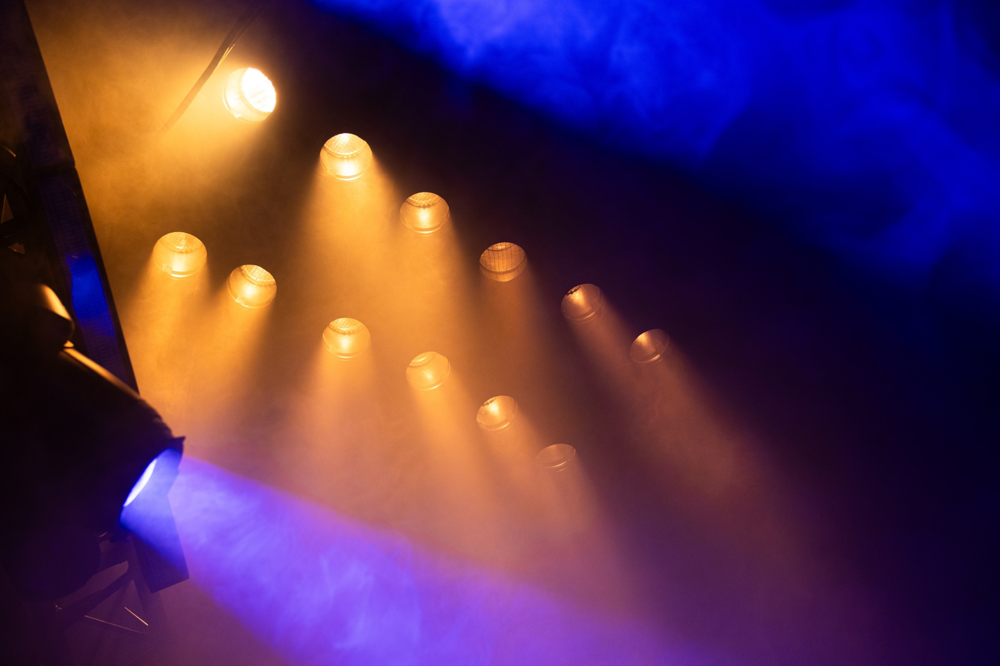

Production Designer/Programmer
Fika 'n' Flash
Photos by Mathew Nicholson (@matnix03) and Finn Irving (@finnirving)
My role
Production Designer/Programmer
As my graduation project, I took on the role of designing the main lighting and rigging behind this show. Working closely with Jaiden Parsons, the sound designer and engineer, we provided the full production behind a band and DJ act.
Production Planning
-
I originally produced this information pack. It easily showed everyone the base information needed from the engineered plan. I was then able to share fixture sheets which showed more detailed information to the people that needed it.
-
Originally, this project was planned with portable hoists. I drew this point plan with two different ways recommended by the NRC handbook to get the location of the hanging points.
-
In the end, we used the in-house hoists for this show. Due to having an accurate plan for the grid and the dimensions of the A-Frames in the grid, the in-house riggers found it easier to work with a graphical plan, with measurements from the proscenium.